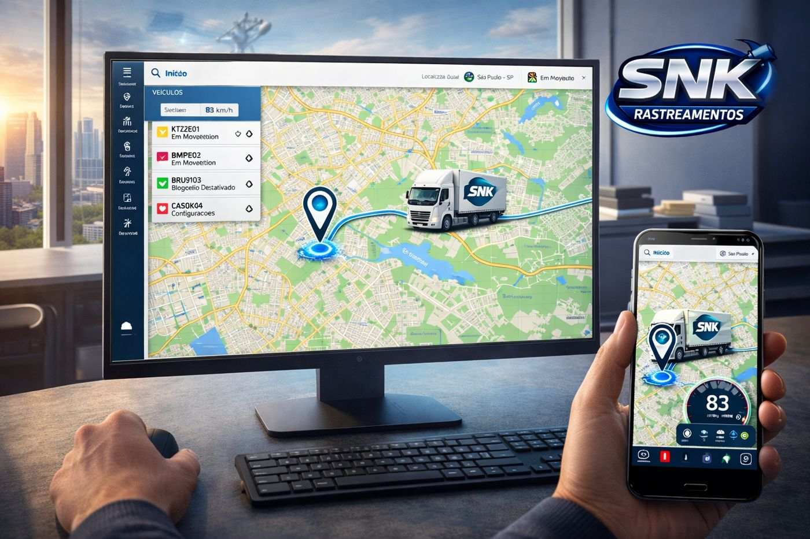

Rastreamento em tempo real para carros, motos e frotas. Acompanhe pelo computador ou pelo celular e bloqueie o veículo à distância em caso de roubo.
O painel mostra a posição, a velocidade e o status de cada veículo, no computador ou no celular.

Recursos pensados para proteger o veículo e dar controle a quem cuida da frota.
Veja onde o veículo está agora e acompanhe o trajeto enquanto ele se move.
Envie o comando de bloqueio ou desbloqueio direto pelo painel ou pelo app.
Defina uma área permitida e seja avisado quando o veículo sair dela.
Consulte rotas anteriores e baixe relatórios em PDF quando precisar.
Acompanhe sua frota de onde estiver com o aplicativo SNK.
Conte quantos veículos você quer rastrear e retornamos pelo WhatsApp.